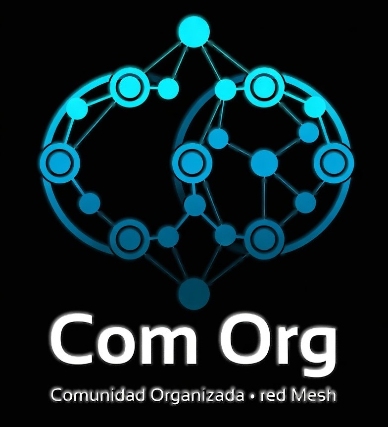

Infraestructura Descentralizada para una Comunidad Organizada
Es una infraestructura de comunicación y debate social basada en una red mesh soberana y directa. Inspirada en la doctrina de resistencia y autonomía de las comunicaciones de campaña, aquí no existen empresas intermediarias, servidores de datos centralizados, ni algoritmos vigilando o manipulando lo que dices. Una vez coordinada la conexión, los datos viajan encriptados de forma directa entre los dispositivos de los usuarios.
💬 Responder con argumentos.
Esto no es una red federada (como Mastodon o Bluesky) ni un P2P comercial abierto. En Com Org los nodos validan su identidad mediante una Autoridad de Certificación (CA) privada y establecen túneles seguros punto a punto empleando la infraestructura de red mesh de Nebula. El Faro solo actúa como coordinador de enlaces; el control de la transmisión es 100% tuyo.
¿Por qué es gratis?
Porque mantener la red cuesta prácticamente cero. Los "Faros" de Nebula solo coordinan las IPs para los apretones de manos mediante texto plano ligero, y pueden correr desde un teléfono viejo sin uso. No hay gastos de infraestructura pesada.
¿Quién modera el contenido?
Tú. Tu cliente local procesa los índices mediante un etiquetado estricto (ADN del Post: Opinión, Datos Públicos, Meme). Si configuras tu nodo para no leer determinadas etiquetas o bloquear un hash específico, tu máquina obedece de inmediato. La moderación es soberana e individual.
Quiero sugerir que la red funcione de otra forma...
La arquitectura técnica y la lógica humana de Com Org ya están cerradas y en fase de desarrollo. El proyecto avanza enfocado en la libertad y la cordura digital. Si buscas algoritmos de indignación y validación rápida, las redes comerciales tradicionales siguen abiertas.